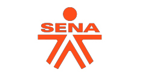

ALIADOS
Nuestros aliados en la transformación del cuidado de la salud.

de pacientes gestionados
patologías y programas
de usuarios recomienda nuestra marca
(NPS)
Estamos cambiando los
paradigmas del sistema de salud,
buscando tener más vidas llenas
de vida y haciéndola fácil al
paciente.
Nos enfocamos en impactar
integralmente la quadruple meta en
salud.
A partir de un entendimiento profundo del paciente, le ayudamos a navegar su ruta de cuidado, lo apoyamos psico-emocionalmente y lo empoderamos con el conocimiento y las herramientas tech adecuadas.
Desde la caracterización masiva de poblaciones y la identificación y gestión de ineficiencias, hasta la creación y entrenamiento de modelos predictivos que nos permiten prever el futuro.
Nuestras soluciones tecnológicas nos permiten desde hacer escalable y masiva la personalización del cuidado hasta la gestión logística de los medicamentos de prescripción, todo entendiendo las necesidades y capacidades de nuestros sistemas de salud.
Siempre agradecida por su excelente servicio. ÁNGELES, Natalia Rodríguez, el mío, gratitud eterna. Comparto con ustedes mi primer parte de victoria, todos mis exámenes ok, control en Marzo, afortunados los que hemos podido contar con tan valiosa compañía. Bendiciones infinitas.
Los amo a todos. Vivo agradecida con el papel que desempeñan en mi proceso.
Lo que nos guía
cada día.
Creemos en el cuidado de humano a humano, basado en la empatía.
Creemos en darle el poder a las personas para crear bienestar.
Creemos que estar y sentirse bien, desde lo físico hasta lo emocional, es la base de la felicidad.
Creemos que la tecnología es nuestro aliado para llegar a impactar 1.000 millones de vidas.
El reconocimiento a nuestro impacto e innovación.
¡Somos el gran ganador de Soluciones!, con nuestro modelo de la gestión de continuidad del cuidado del cuidado en el evento de Ideatón 2022.
Ver Más¡Somos la 4ta Startup más innovadora!, estamos felices y orgullosos de nuestra labor. Impactar un 1.000 millones de vidas se ha convertido en el mejor sueño y el más grande motor.
Ver MásLa solución desarrollada por Omnivida pretende identificar estas ineficiencias de manera temprana y oportuna, a partir del análisis de varios desperdicios.
Ver MásReconociendo la necesidad de continuidad en la atención al paciente, Mateo Gómez explica cómo el modelo de atención…
Ver MásNuestros aliados en la transformación del cuidado de la salud.